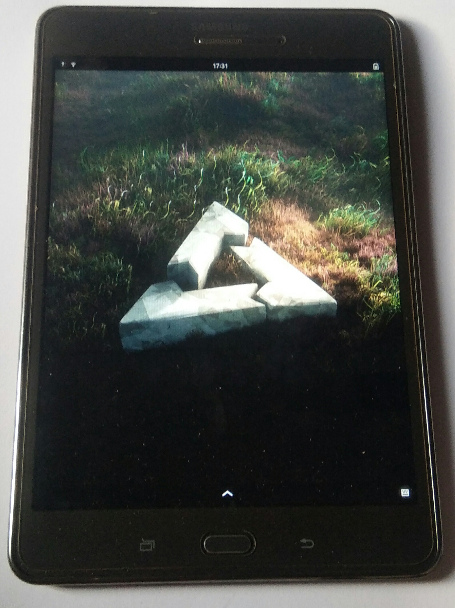

Samsung Galaxy Tab A 8.0 2015 (samsung-gt58)
|
 Samsung Galaxy Tab A 8.0 LTE (SM-T355Y) | |
| Manufacturer | Samsung |
|---|---|
| Name | Galaxy Tab A 8.0 (2015) |
| Codename | samsung-gt58 |
| Released | 2015 |
| Category | community |
| Original software | Android 7.1.1 with Linux Kernel version 3.10.49 |
| Hardware | |
| Chipset | Qualcomm Snapdragon 410 (MSM8916) |
| CPU | Quad-core 1.2 GHz Cortex-A53 |
| GPU | Qualcomm Adreno 306 |
| Display | 768x1024 (XGA) PLS |
| Storage | 16 GB |
| Memory | 2 GB |
| Architecture | aarch64 |
| Type | tablet |
| Unixbench Whet/Dhry score | 921 |
{kind=link}
| USB Networking |
Works
|
|---|---|
| Flashing |
Works
|
| Touchscreen |
Works
|
| Display |
Works
|
| WiFi |
Works
|
| FDE |
Works
|
| Mainline |
Works
|
| Battery |
Partial
|
| 3D Acceleration |
Works
|
| Audio |
Works
|
| Bluetooth |
Works
|
| Camera | |
| GPS |
Works
|
| Mobile data |
Works
|
| SMS |
Works
|
| Calls |
Works
|
| USB OTG |
Broken
|
| NFC |
Unavailable
|
| Accelerometer |
Works
|
|---|---|
| Magnetometer | |
| Ambient Light | |
| Proximity | |
| Hall Effect | |
| Barometer | |
| Power Sensor | |
| Camera Flash | |
|---|---|
| Keyboard | |
| Touchpad | |
| USB-A | |
| HDMI/DP | |
| Ir TX |
Unavailable
|
| Ir RX | |
| Stylus | |
| Haptics | |
| Ethernet | |
| FOSS bootloader | |
|
This device is based on the Snapdragon 410. See the SoC page for common tips, guides and troubleshooting steps |
| This device has recently been upgraded to the community category.
you can download a pre-built image from the download page and follow instructions there : Use Postmarket Community pre-built image on Samsung devices page. |
Samsung Galaxy Tab A (2015) is a series of devices based on Qualcomm Snapdragon 410 SoC which has great mainline Linux support.
This page should generally apply to any 8.0 inch variant of the device (WiFi, LTE, with and without the pen support). Note that those variants may have different amount of RAM. For 9.7 inch variants see Samsung Galaxy Tab A 9.7.
Variant differences
The device has multiple variants, the main differences in the features are shown in the table below:
| Feature | WIFI | LTE | Notes |
|---|---|---|---|
| GPS | Works | WiFi variant needs investigation. Modem support is not enabled for the WiFi variant at this time. | |
| Mobile data | Unavailable | Works | |
| SMS | Unavailable | Works | |
| Calls | Unavailable | Works |
Note: The WiFi variant gt58wifi chipset is APQ8016.
| WARNING: The WiFi variant gt58wifi / SM-T350 is not listed as supported by lk2nd, proceed at your own risk. |
Contributors
- Hello-world-321
Maintainer(s)
- TravMurav
Users owning this device
- Baonks81 (Notes: sm-t355y 2GB/16GB)
- BlackEyedSquid (Notes: SM-T350 Wi-Fi variant)
- Breakfastisready (Notes: sm-t355y 2GB/16GB)
- TravMurav (Notes: SM-T355 (LTE variant, defective radios))
How to enter flash mode
Download mode: When turned off hold Power + Volume Up + Home
lk2nd Fastboot: When turned off hold Power + Volume Down
Installation
lk2nd is a secondary bootloader that provides a standard fastboot interface, which can be used to boot postmarketOS without android boot flashed or pmbootstrap flasher flash_kernel.
- Download lk2nd-msm8916.img from Releases page on Github.
- Boot your phone to bootloader (Odin/Download) mode by holding Volume Down and Home while powering up.
- Follow lk2nd instructions to install lk2nd. Basically flash it to boot partition (
heimdall flash --BOOT lk2nd-msm8916.img) - Follow Qualcomm_Snapdragon_410/412_(MSM8916)#Installation to install postmarketOS.
| Note: Enter lk2nd fastboot mode by pressing only Volume Down + Power (without Home). Pressing Home additionally will bring you to the Samsung Download mode. |
Audio
| WARNING: The speakers are rather loud on 100% volume and may produce distorted sound that may damage your speakers after long use. Please make sure to use reasonable volumes - your ears and your speaker will thank you! |
Known Bugs and Workarounds
- Multi-touch doesn't work
This is a known issue: The touch controller sends the events in a different format that the driver can decode. Fix is WIP.
- How to charge device ?
Charger driver is not present at this time. Turn off your device and plug it in. The device will boot and get charged. You can check if the device charges by reading the value from /sys/class/power_supply/max170xx_battery/current_now
- Display Artifacts during brightness adjustment
Turn display off (lock device using power button) and turn on again to remove artifacts until next brightness change. Auto brightness should be turned off due display bug.
- Automatically switch to headset and turn off speakers when headset plugged in or cannot switch to speakers during phone calls
Select headset from settings after plugging in headset (Known issue)
Mainline Kernel Status
Table of components in the device
| Component | Model | Mainline kernel driver | Status |
|---|---|---|---|
| MicroUSB | - | Yes | Working in kernel fork |
| eMMC | (Android lists) Toshiba 400073 (Same as gt510wifi) | Yes | Working in kernel fork |
| Battery/Charging/Fuelgauge (Same as gt510wifi) | MAX77849 | ? | Fuel gauge works using MAX77849 drivers |
| Volume/Power/Home keys | GPIO | Yes | Working in kernel fork |
| Capacitive keys | Part of Zinitix BT532 Touchscreen | No | Needs driver changes |
| Accelerometer | STMicroelectronics (Same as gt510wifi and matissevewifi) | Yes, supported in kernel fork | Yes |
| Light Sensor | Capella Micro CM3323 (Same as gt510wifi) | Yes | Yes |
| Display | Samsung S6D7AA0 LSL080AL03 | No | Working in kernel fork |
| Backlight IC | Texas Instruments lp8556 | Not strictly needed | Brightness is set through DSI, PWM signal goes to lp8556 |
| Audio | PM8916/NXP TFA9895 (Same as a3ulte) | Yes | Audio & Microphones Work. Speakers are powered by external amp (NXP TFA9895 or similar). Secondary Mic (On Device) uses gpio pin. |
| Touch Screen | Zinitix BT532 | Yes | Working in kernel fork using BT541 Drivers. Drivers need modification to enable touchkeys. |
| USB Switch / MUIC | Part of MAX77849 (Same as gt510wifi) | ? | Fuel gauge works using MAX77849 drivers |
| Proximity sensor | Semtech SX9500 (Same as gt510wifi) | Yes | Missing DT bindings |
| GPU | Adreno 306 | Yes | Working in kernel fork |
| Wi-Fi | WNC3660B | Yes | Working in kernel fork, Using the WCN3660B compatible |
| Bluetooth | WCN3660B | Yes | Working in kernel fork, Using the WCN3660B compatible |
| GPS | Part of Modem DSP | Yes | Yes |
| Front camera (Same as gt510wifi) | Siliconfile Technologies Inc. SR200PC20 | Not sure, but there's a datasheet | |
| Main camera (Same as gt510wifi) | Siliconfile Technologies Inc. SR544 | Old v4l2 patch for unrelated hardware, may be adaptable to current Mainline |
Running some diagnostics programs on Android will likely point out some more info about sensors and any other specifications.
Patch to enable otg
The following patch modifies max77843 extcon driver for max77849 and adds support in device tree
After applying this patch the driver will not work for max77843. There are unhandled interrupts which will be disabled by linux.
Patch
diff --git a/arch/arm64/boot/dts/qcom/msm8916-samsung-gt5-common.dtsi b/arch/arm64/boot/dts/qcom/msm8916-samsung-gt5-common.dtsi
index beb3920a83..8a69bde63e 100644
--- a/arch/arm64/boot/dts/qcom/msm8916-samsung-gt5-common.dtsi
+++ b/arch/arm64/boot/dts/qcom/msm8916-samsung-gt5-common.dtsi
@@ -117,10 +117,23 @@ fuelgauge@36 {
};
};
- // FIXME: Use extcon device provided by MUIC driver when available
- usb_vbus: usb-vbus {
- compatible = "linux,extcon-usb-gpio";
- vbus-gpio = <&msmgpio 2 GPIO_ACTIVE_HIGH>;
+};
+
+&blsp_i2c1 {
+ status = "okay";
+
+ pmic@66 {
+ compatible = "maxim,max77843";
+ interrupt-parent = <&msmgpio>;
+ interrupts = <12 IRQ_TYPE_EDGE_FALLING>;
+ reg = <0x66>;
+
+ muic: max77843-muic {
+ compatible = "maxim,max77843-muic";
+
+ pinctrl-names = "default";
+ pinctrl-0 = <&muic_int_default &ovp_en_default>;
+ };
};
};
@@ -243,12 +256,11 @@ codec {
&usb {
status = "okay";
- dr_mode = "peripheral";
- extcon = <&usb_vbus>;
+ extcon = <&muic>, <&muic>;
};
&usb_hs_phy {
- extcon = <&usb_vbus>;
+ extcon = <&muic>;
};
&wcd_codec {
@@ -412,4 +424,21 @@ jack_default: jack-default {
drive-strength = <2>;
bias-disable;
};
+
+ muic_int_default: muic-int-default {
+ pins = "gpio12";
+ function = "gpio";
+
+ drive-strength = <2>;
+ bias-disable;
+ };
+
+ ovp_en_default: ovp_en_default {
+ pins = "gpio102";
+ function = "gpio";
+
+ drive-strength = <2>;
+ bias-disable;
+ output-low;
+ };
};
diff --git a/arch/arm64/configs/msm8916_defconfig b/arch/arm64/configs/msm8916_defconfig
index 8aba03f4f2..fe7bd8d87d 100644
--- a/arch/arm64/configs/msm8916_defconfig
+++ b/arch/arm64/configs/msm8916_defconfig
@@ -201,6 +201,7 @@ CONFIG_QCOM_TSENS=y
CONFIG_QCOM_SPMI_TEMP_ALARM=y
CONFIG_WATCHDOG=y
CONFIG_PM8916_WATCHDOG=y
+CONFIG_MFD_MAX77843=y
CONFIG_MFD_SPMI_PMIC=y
CONFIG_MFD_RT5033=m
CONFIG_REGULATOR_FIXED_VOLTAGE=y
@@ -308,6 +309,7 @@ CONFIG_QCOM_APR=m
CONFIG_QCOM_MEMSHARE_QMI_SERVICE=m
CONFIG_PM_DEVFREQ=y
CONFIG_DEVFREQ_GOV_SIMPLE_ONDEMAND=y
+CONFIG_EXTCON_MAX77843=y
CONFIG_EXTCON_SM5502=y
CONFIG_EXTCON_USB_DUMMY=y
CONFIG_EXTCON_USB_GPIO=y
diff --git a/drivers/extcon/extcon-max77843.c b/drivers/extcon/extcon-max77843.c
index 8e6e97ec65..6814a1967d 100644
--- a/drivers/extcon/extcon-max77843.c
+++ b/drivers/extcon/extcon-max77843.c
@@ -139,6 +139,7 @@ struct max77843_muic_irq {
static struct max77843_muic_irq max77843_muic_irqs[] = {
{ MAX77843_MUIC_IRQ_INT1_ADC, "MUIC-ADC" },
+ { MAX77849_MUIC_IRQ_INT1_ADCLOW, "MUIC-ADC_LOW" },
{ MAX77843_MUIC_IRQ_INT1_ADCERROR, "MUIC-ADC_ERROR" },
{ MAX77843_MUIC_IRQ_INT1_ADC1K, "MUIC-ADC1K" },
{ MAX77843_MUIC_IRQ_INT2_CHGTYP, "MUIC-CHGTYP" },
@@ -146,6 +147,7 @@ static struct max77843_muic_irq max77843_muic_irqs[] = {
{ MAX77843_MUIC_IRQ_INT2_DCDTMR, "MUIC-DCDTMR" },
{ MAX77843_MUIC_IRQ_INT2_DXOVP, "MUIC-DXOVP" },
{ MAX77843_MUIC_IRQ_INT2_VBVOLT, "MUIC-VBVOLT" },
+ { MAX77849_MUIC_IRQ_INT2_VIDRM, "MUIC-VIDRM" },
{ MAX77843_MUIC_IRQ_INT3_VBADC, "MUIC-VBADC" },
{ MAX77843_MUIC_IRQ_INT3_VDNMON, "MUIC-VDNMON" },
{ MAX77843_MUIC_IRQ_INT3_DNRES, "MUIC-DNRES" },
@@ -165,6 +167,7 @@ static const struct regmap_config max77843_muic_regmap_config = {
static const struct regmap_irq max77843_muic_irq[] = {
/* INT1 interrupt */
{ .reg_offset = 0, .mask = MAX77843_MUIC_ADC, },
+ { .reg_offset = 0, .mask = MAX77849_MUIC_ADCLOW, },
{ .reg_offset = 0, .mask = MAX77843_MUIC_ADCERROR, },
{ .reg_offset = 0, .mask = MAX77843_MUIC_ADC1K, },
@@ -174,6 +177,7 @@ static const struct regmap_irq max77843_muic_irq[] = {
{ .reg_offset = 1, .mask = MAX77843_MUIC_DCDTMR, },
{ .reg_offset = 1, .mask = MAX77843_MUIC_DXOVP, },
{ .reg_offset = 1, .mask = MAX77843_MUIC_VBVOLT, },
+ { .reg_offset = 1, .mask = MAX77843_MUIC_VIDRM, },
/* INT3 interrupt */
{ .reg_offset = 2, .mask = MAX77843_MUIC_VBADC, },
@@ -247,15 +251,12 @@ static void max77843_charger_set_otg_vbus(struct max77843_muic_info *info,
bool on)
{
struct max77693_dev *max77843 = info->max77843;
- unsigned int cnfg00;
+ /*Fixme : Use proper registers from downstream*/
if (on)
- cnfg00 = MAX77843_CHG_OTG_MASK | MAX77843_CHG_BOOST_MASK;
+ regmap_write(max77843->regmap_chg,MAX77843_CHG_REG_CHG_CNFG_00,0x2a);
else
- cnfg00 = MAX77843_CHG_ENABLE | MAX77843_CHG_BUCK_MASK;
-
- regmap_update_bits(max77843->regmap_chg, MAX77843_CHG_REG_CHG_CNFG_00,
- MAX77843_CHG_MODE_MASK, cnfg00);
+ regmap_write(max77843->regmap_chg,MAX77843_CHG_REG_CHG_CNFG_00,0x00); //Disable charger too
}
static int max77843_muic_get_cable_type(struct max77843_muic_info *info,
@@ -670,6 +671,7 @@ static irqreturn_t max77843_muic_irq_handler(int irq, void *data)
switch (irq_type) {
case MAX77843_MUIC_IRQ_INT1_ADC:
+ case MAX77849_MUIC_IRQ_INT1_ADCLOW:
case MAX77843_MUIC_IRQ_INT1_ADCERROR:
case MAX77843_MUIC_IRQ_INT1_ADC1K:
info->irq_adc = true;
@@ -679,6 +681,7 @@ static irqreturn_t max77843_muic_irq_handler(int irq, void *data)
case MAX77843_MUIC_IRQ_INT2_DCDTMR:
case MAX77843_MUIC_IRQ_INT2_DXOVP:
case MAX77843_MUIC_IRQ_INT2_VBVOLT:
+ case MAX77849_MUIC_IRQ_INT2_VIDRM:
info->irq_chg = true;
break;
case MAX77843_MUIC_IRQ_INT3_VBADC:
diff --git a/drivers/mfd/max77843.c b/drivers/mfd/max77843.c
index 209ee24d9c..d462d2bc0b 100644
--- a/drivers/mfd/max77843.c
+++ b/drivers/mfd/max77843.c
@@ -110,6 +110,13 @@ static int max77843_probe(struct i2c_client *i2c,
max77843->irq = i2c->irq;
max77843->type = id->driver_data;
+ max77843->regmap_chg = devm_regmap_init_i2c(i2c,
+ &max77843_charger_regmap_config);
+ if (IS_ERR(max77843->regmap_chg)) {
+ dev_err(&i2c->dev, "Failed to allocate register map\n");
+ return PTR_ERR(max77843->regmap_chg);
+ }
+/*
max77843->regmap = devm_regmap_init_i2c(i2c,
&max77843_regmap_config);
if (IS_ERR(max77843->regmap)) {
@@ -138,8 +145,20 @@ static int max77843_probe(struct i2c_client *i2c,
dev_err(&i2c->dev, "Failed to init Charger\n");
goto err_pmic_id;
}
+*/
+
+ /* No active discharge on safeout ldo 1,2 */
+ ret = regmap_update_bits(max77843->regmap_chg,
+ MAX77843_SYS_REG_SAFEOUTCTRL,
+ 0x00, 0x30);
+ if (ret < 0) {
+ dev_err(&i2c->dev, "Failed to disable active discharge\n");
+ }
+
+ /* Disable charger */
+ regmap_write(max77843->regmap_chg,MAX77843_CHG_REG_CHG_CNFG_00,0x00);
- ret = regmap_update_bits(max77843->regmap,
+ ret = regmap_update_bits(max77843->regmap_chg,
MAX77843_SYS_REG_INTSRCMASK,
MAX77843_INTSRC_MASK_MASK,
(unsigned int)~MAX77843_INTSRC_MASK_MASK);
diff --git a/include/linux/mfd/max77843-private.h b/include/linux/mfd/max77843-private.h
index 0bc7454c4d..10d294e7ae 100644
--- a/include/linux/mfd/max77843-private.h
+++ b/include/linux/mfd/max77843-private.h
@@ -13,9 +13,9 @@
#include <linux/i2c.h>
#include <linux/regmap.h>
-#define I2C_ADDR_TOPSYS (0xCC >> 1)
-#define I2C_ADDR_CHG (0xD2 >> 1)
-#define I2C_ADDR_FG (0x6C >> 1)
+//#define I2C_ADDR_TOPSYS (0xCC >> 1)
+#define I2C_ADDR_CHG (0xCC >> 1)
+//#define I2C_ADDR_FG (0x6C >> 1)
#define I2C_ADDR_MUIC (0x4A >> 1)
/* Topsys, Haptic and LED registers */
@@ -28,7 +28,6 @@ enum max77843_sys_reg {
MAX77843_SYS_REG_SYSINTSRC = 0x24,
MAX77843_SYS_REG_SYSINTMASK = 0x26,
MAX77843_SYS_REG_TOPSYS_STAT = 0x28,
- MAX77843_SYS_REG_SAFEOUTCTRL = 0xC6,
MAX77843_SYS_REG_END,
};
@@ -70,6 +69,7 @@ enum max77843_charger_reg {
MAX77843_CHG_REG_CHG_CNFG_10 = 0xC1,
MAX77843_CHG_REG_CHG_CNFG_11 = 0xC2,
MAX77843_CHG_REG_CHG_CNFG_12 = 0xC3,
+ MAX77843_SYS_REG_SAFEOUTCTRL = 0xC6,
MAX77843_CHG_REG_END,
};
@@ -156,6 +156,7 @@ enum max77843_irq {
enum max77843_irq_muic {
/* MUIC: INT1 */
MAX77843_MUIC_IRQ_INT1_ADC,
+ MAX77849_MUIC_IRQ_INT1_ADCLOW,
MAX77843_MUIC_IRQ_INT1_ADCERROR,
MAX77843_MUIC_IRQ_INT1_ADC1K,
@@ -165,6 +166,7 @@ enum max77843_irq_muic {
MAX77843_MUIC_IRQ_INT2_DCDTMR,
MAX77843_MUIC_IRQ_INT2_DXOVP,
MAX77843_MUIC_IRQ_INT2_VBVOLT,
+ MAX77849_MUIC_IRQ_INT2_VIDRM,
/* MUIC: INT3 */
MAX77843_MUIC_IRQ_INT3_VBADC,
@@ -283,6 +285,7 @@ enum max77843_irq_muic {
#define MAX77843_CHG_INPUT_CURRENT_LIMIT_STEP 33000
#define MAX77843_MUIC_ADC BIT(0)
+#define MAX77849_MUIC_ADCLOW BIT(1)
#define MAX77843_MUIC_ADCERROR BIT(2)
#define MAX77843_MUIC_ADC1K BIT(3)
@@ -291,6 +294,7 @@ enum max77843_irq_muic {
#define MAX77843_MUIC_DCDTMR BIT(2)
#define MAX77843_MUIC_DXOVP BIT(3)
#define MAX77843_MUIC_VBVOLT BIT(4)
+#define MAX77843_MUIC_VIDRM BIT(5)
#define MAX77843_MUIC_VBADC BIT(0)
#define MAX77843_MUIC_VDNMON BIT(1)
@@ -303,21 +307,25 @@ enum max77843_irq_muic {
/* MAX77843 INTSRCMASK register */
#define MAX77843_INTSRCMASK_CHGR 0
-#define MAX77843_INTSRCMASK_SYS 1
-#define MAX77843_INTSRCMASK_FG 2
-#define MAX77843_INTSRCMASK_MUIC 3
+#define MAX77843_INTSRCMASK_SYS 2
+//#define MAX77843_INTSRCMASK_FG 2 //not in downstream
+#define MAX77843_INTSRCMASK_MUIC 1
#define MAX77843_INTSRCMASK_CHGR_MASK BIT(MAX77843_INTSRCMASK_CHGR)
#define MAX77843_INTSRCMASK_SYS_MASK BIT(MAX77843_INTSRCMASK_SYS)
#define MAX77843_INTSRCMASK_FG_MASK BIT(MAX77843_INTSRCMASK_FG)
#define MAX77843_INTSRCMASK_MUIC_MASK BIT(MAX77843_INTSRCMASK_MUIC)
+/*Only unmask muic for now
#define MAX77843_INTSRC_MASK_MASK \
(MAX77843_INTSRCMASK_MUIC_MASK | MAX77843_INTSRCMASK_FG_MASK | \
MAX77843_INTSRCMASK_SYS_MASK | MAX77843_INTSRCMASK_CHGR_MASK)
+*/
+#define MAX77843_INTSRC_MASK_MASK (MAX77843_INTSRCMASK_MUIC_MASK)
/* MAX77843 STATUS register*/
#define MAX77843_MUIC_STATUS1_ADC_SHIFT 0
+#define MAX77849_MUIC_STATUS1_ADCLOW_SHIFT 5
#define MAX77843_MUIC_STATUS1_ADCERROR_SHIFT 6
#define MAX77843_MUIC_STATUS1_ADC1K_SHIFT 7
#define MAX77843_MUIC_STATUS2_CHGTYP_SHIFT 0
@@ -331,6 +339,7 @@ enum max77843_irq_muic {
#define MAX77843_MUIC_STATUS3_MPNACK_SHIFT 6
#define MAX77843_MUIC_STATUS1_ADC_MASK (0x1f << MAX77843_MUIC_STATUS1_ADC_SHIFT)
+#define MAX77849_MUIC_STATUS1_ADCLOW_MASK BIT(MAX77849_MUIC_STATUS1_ADCLOW_SHIFT)
#define MAX77843_MUIC_STATUS1_ADCERROR_MASK BIT(MAX77843_MUIC_STATUS1_ADCERROR_SHIFT)
#define MAX77843_MUIC_STATUS1_ADC1K_MASK BIT(MAX77843_MUIC_STATUS1_ADC1K_SHIFT)
#define MAX77843_MUIC_STATUS2_CHGTYP_MASK (0x7 << MAX77843_MUIC_STATUS2_CHGTYP_SHIFT)
Reference datasheets (similar devices)
- MFD : https://www.infinite-electronic.kr/datasheet/94-MAX14616AEWA.pd
- Charger : https://datasheets.maximintegrated.com/en/ds/MAX77860.pdf
- Others :
GPS investigation gt58wifi (SM-T350)
Considering SM-T350 as similar to SM-T35x without a sim card, GPS access is probably not possible at present due to (at minimum) upstream modem (manager) issues GNSS (GPS).
If you're interested in bringing up the modem/gps on APQ variants of the device, feel free to reach out to travmurav via pmOS Matrix_and_IRC channels.